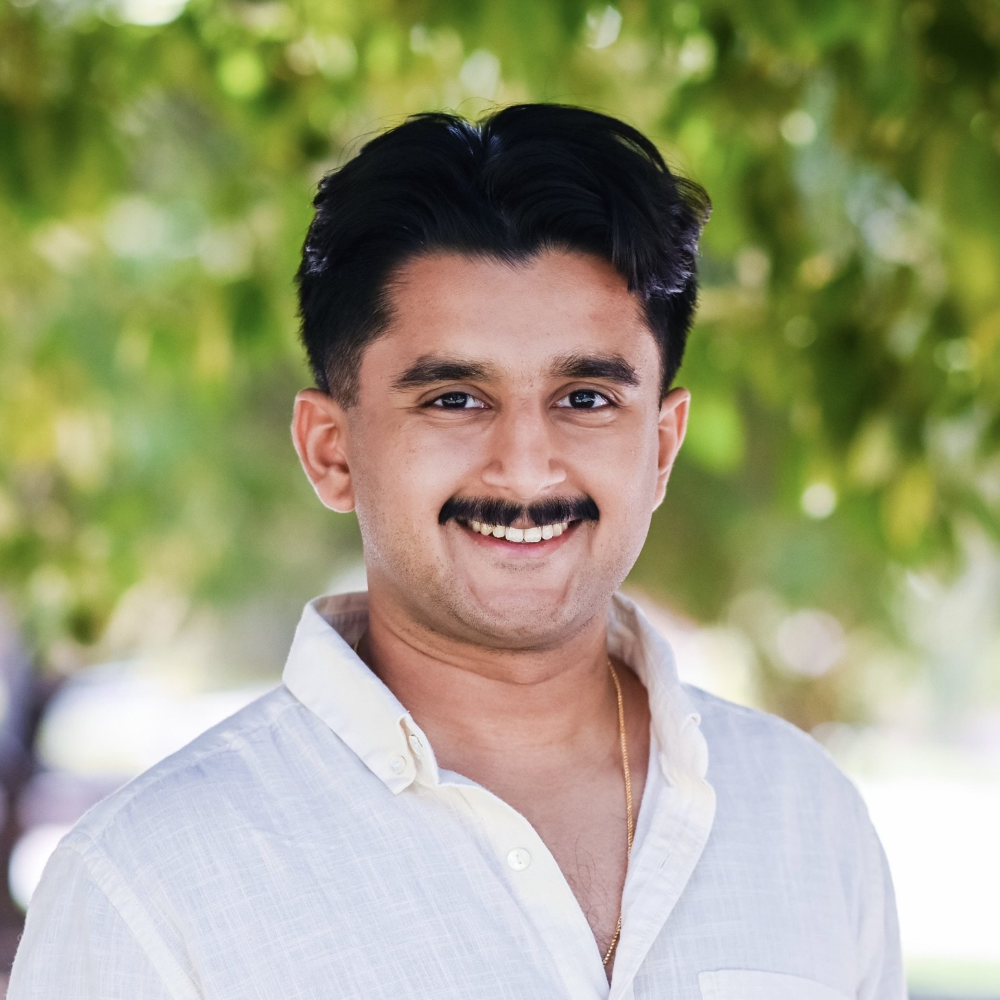
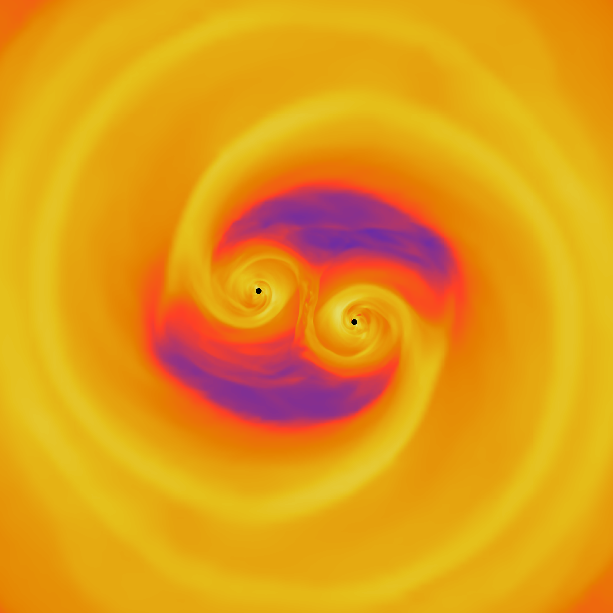
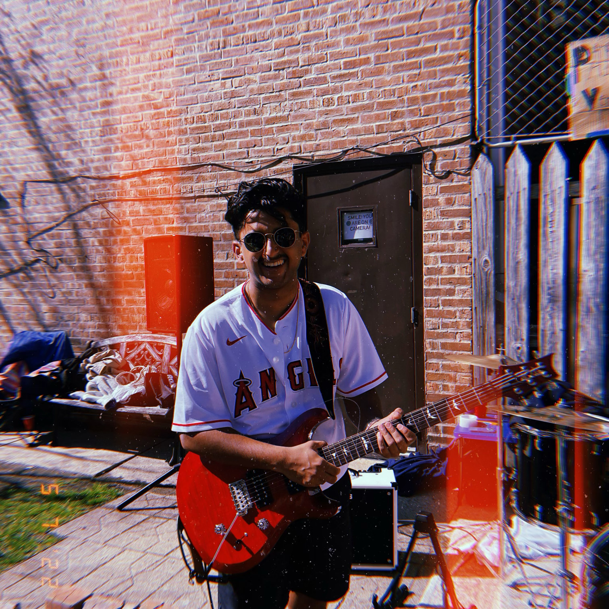
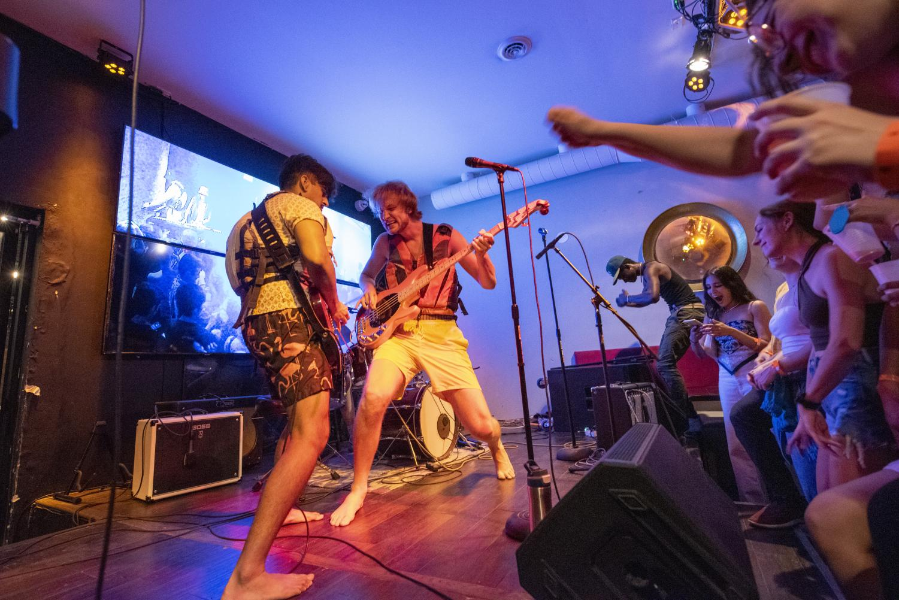
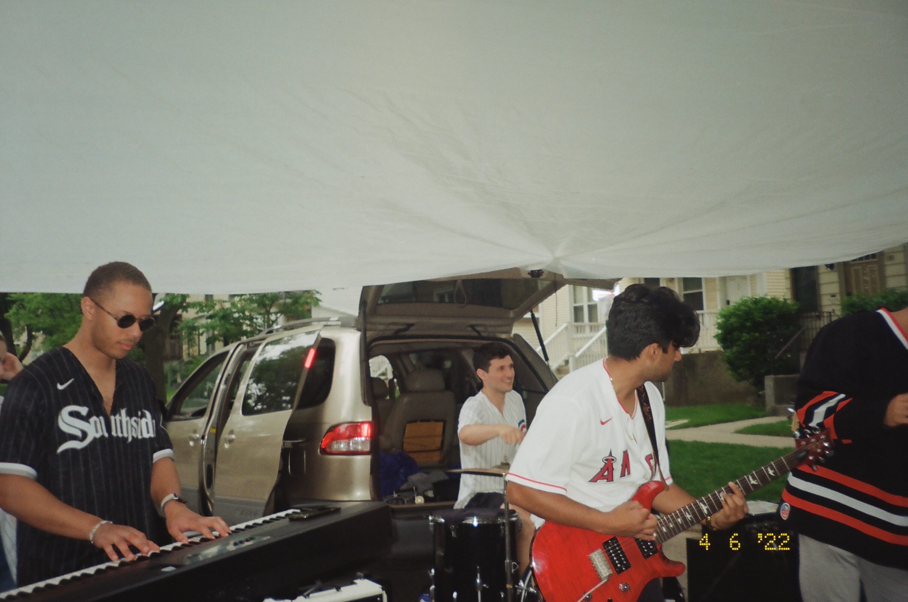
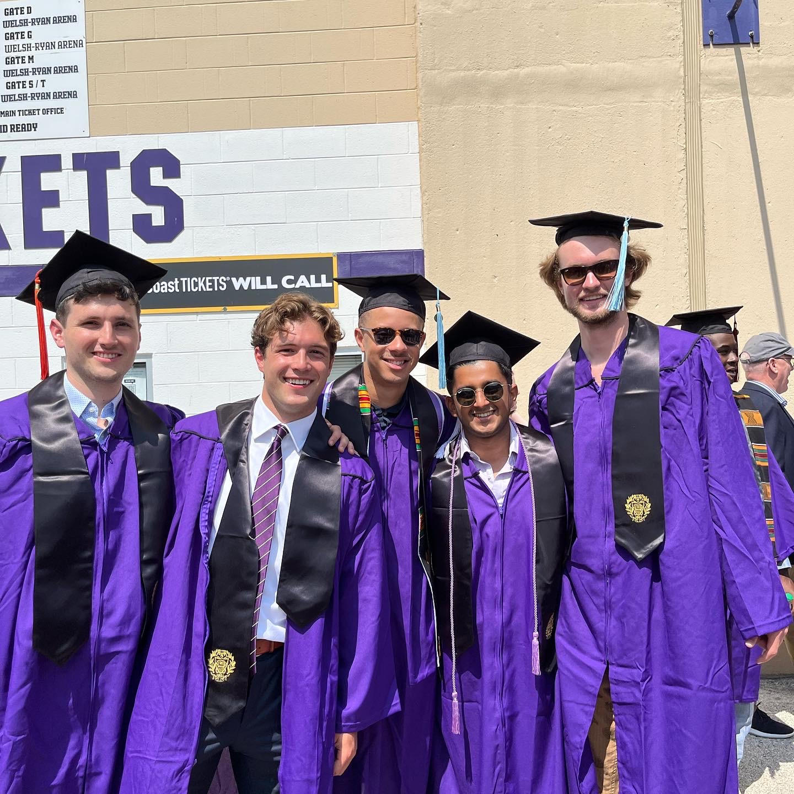
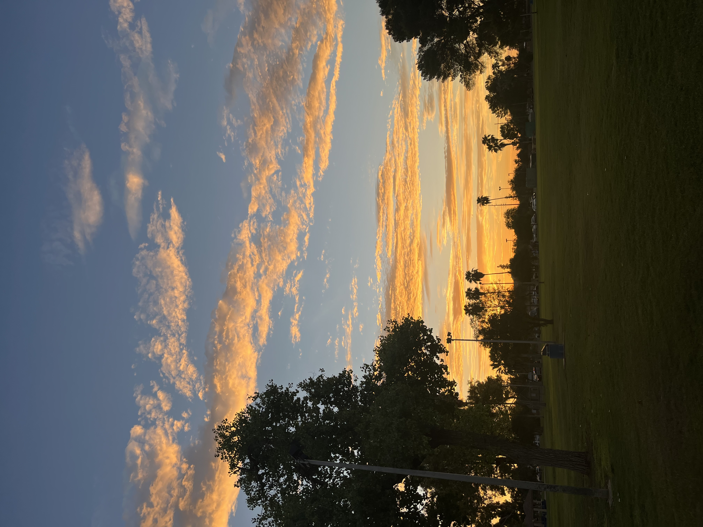
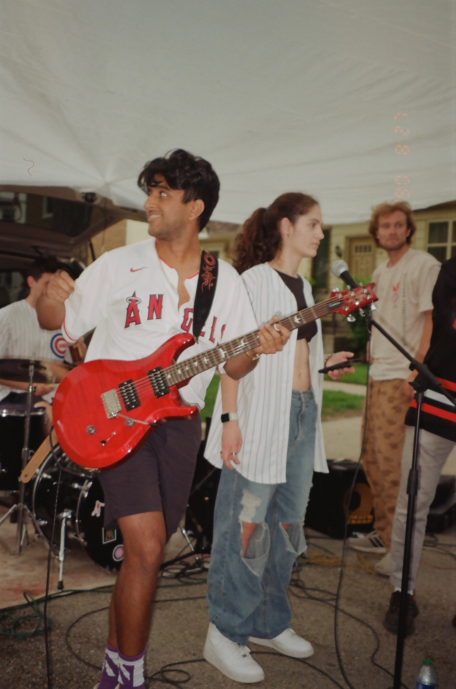
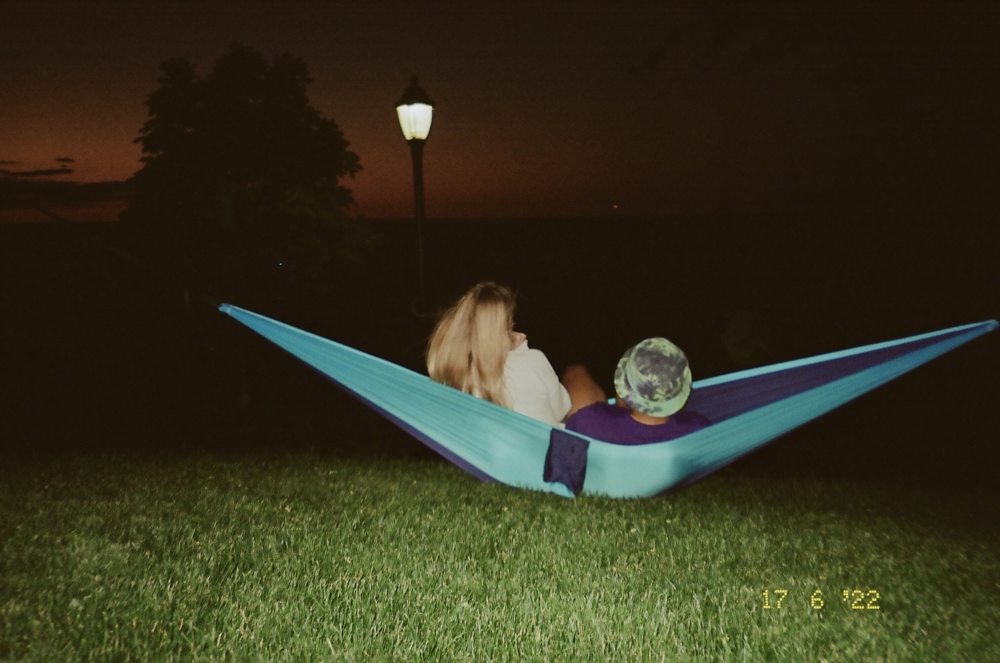
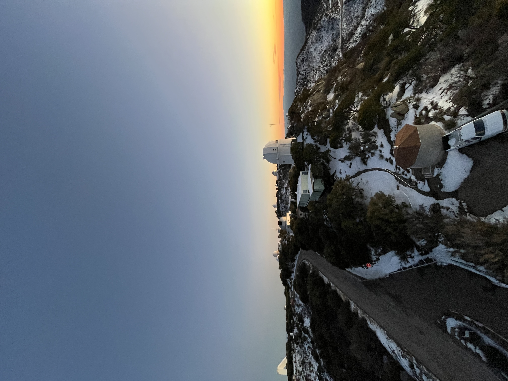

My name is Vikram Manikantan. I am an
Astrophysics PhD Candidate
at Steward Observatory, University of Arizona. I study
binary black holes, accretion disks, relativistic jets, and their multi‑messenger emission.

About
I am a computational/theoretical astrophysicist and 4th year PhD candidate at Steward Observatory, at the University of Arizona. I have a B.A. in Physics and a minor in Computer Science from Northwestern University. I am passionate about science education, soccer, and music.
I currently work with Prof. Vasilis Paschalidis on simulating magnetohydrodynamic accretion onto binary black holes and uncovering their multi‑messenger emission. I am part of the Theoretical Astrophysics Program (TAP) and the Transient Astrophysics group (SONATA) at the University of Arizona.
Previously, I was at the Center for Interdisciplinary Exploration and Research in Astrophysics (CIERA) at Northwestern University, where I worked with Prof. Sasha Tchekhovskoy on angular momentum transport mechanisms in magnetically arrested disks around spinning black holes.
Research
I am a theoretical and computational astrophysicist whose research focuses on the multi‑messenger nature of compact objects such as supermassive (binary) black holes. I use numerical relativity and magnetohydrodynamic codes, such as Einstein Toolkit, IllinoisGRMHD, and H‑AMR, to simulate these systems from first principles.
Currently, I am studying accretion onto supermassive binary black holes, with a specific interest in uncovering the electromagnetic counterparts to gravitational wave signals from these systems. We simulate these systems by solving Einstein's equations of general relativity to accurately model the spacetime, and then evolving the magnetohydrodynamic equations on the curved spacetime to simulate the accretion flow.

-
Effects of Eccentricity on Accreting Binary Black Holes: MHD Simulations in Full GR Reveal Novel Periodicities in Jet Power and Synchrotron SpectraVikram Manikantan, Vasileios Paschalidis, and Gabriele Bozzola, 2025. Phys. Rev. D 112, 043004 [publisher] [pdf]
-
Coincident Multimessenger Bursts from Eccentric Supermassive Binary Black HolesVikram Manikantan, Vasileios Paschalidis, and Gabriele Bozzola, 2025. ApJL, 984 L47 [publisher] [pdf]
-
Winds and Disk Turbulence Exert Equal Torques on Magnetically Arrested Disks
Mentorship / Outreach
I am passionate about developing programs that increase undergraduate students success in astrophysics research. I currently focus on two aspects of this: 1. training students with fundamental skills needed to perform leading research, and 2. providing mentorship and a support structure to create sustainable success and increase retention of underrepresented groups.
To do this, I have taken leadership roles in several programs at the University of Arizona, including the TIMESTEP Research Apprenticeship program and the Computational and Mathematical Program for incoming Arizona Science Students (COMPASS). I am also interested in, and attended a workshop on, developing Course‑based Undergraduate Research Experiences (CUREs) to increase undergraduate research opportunities.
You can learn more about my mentorship and outreach efforts below:
TIMESTEP Research Apprenticeship
Graduate Student Coordinator of the Research Apprenticeship program; a mentorship program that provides second year undergraduates with a paid opportunity to build technical and professional skills applicable to both research and industry.
COMPASS
Co‑organizer and instructor for COMPASS, a computational and mathematical workshop for incoming undergraduates that aims to remove barriers to entering STEM by providing necessary technical training.
Steward Social Media
Graduate Student Lead for Steward Observatory's new social media initiative which includes creating and running our Instagram, Twitter, Bluesky and Facebook accounts, as well as developing content to post three times a week.
TIMESTEP Internship
Graduate Student Coordinator of the Summer Tech Internship program; a mentorship program supporting undergraduates entering the STEM workforce by matching them with companies for a summer internship and providing a support structure.
Music
I have played the electric guitar for over 14 years and am an experienced live performer. I also play the electric bass and, as a last resort, the drums. My proudest moments came as part of Poor Man's Yacht Club, a band my best friends and I started in our dorm during our freshman year. It kept us going through the pandemic. We won Northwestern University's Battle of the Bands, played many shows in the Evanston area, and wrote, recorded, and released our own music.
Check us out on Spotify
Find us on Instagram
They wrote an article about our battle of the bands win.
I also have a personal Instagram music account.








Contact
Email: vik@arizona.edu
Bluesky: @vikmani.bsky.social
Github: vikrammanikantan
Publications: Google Scholar ; Astrophysics Data System (ADS)